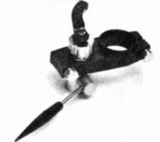
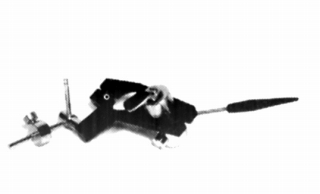
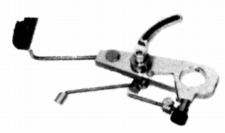
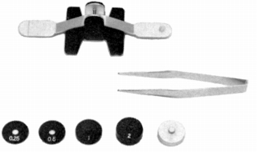
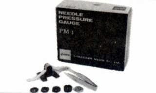
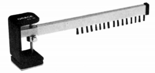
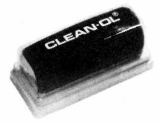
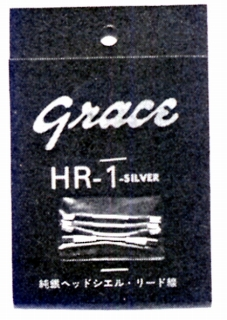
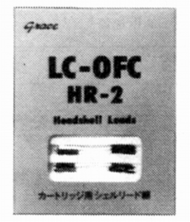

その他の製品
�@アームリフター
AD-2

■価格 2,800円
■備考 G-545F,565F用
価格は1973年頃のもの。
1975年頃は3,250円。
AD-2B

■価格 3,200円
■備考 Σ-709用
価格は1973年頃のもの。
1975年頃は3,750円。
AD-3B

■価格 8,000円
■備考 オイルダンプ式
アームレスト付き。
価格は1979年頃のもの。
1987年頃には12,000円。
�A針圧計
PM-1
 
■価格 1,850円
■備考 天秤タイプ
測定範囲 0.25〜7.75g
付属ウェイト 0.25/0.5/1.0/2.0/4.0g(各1枚）
�B帯電除却器
PE-16

■価格 7,000円
■備考 カーボンファバーブラシによる自己放電式。
�Cクリーナー
OL-1

■価格 1,000円
■備考
�Dリードワイヤー
HR-1

■価格 1,000円
■備考 純銀線。
HR-2

■価格 1,200円
■備考 LC-OFC線。0.08�o径50本縒り。
グレースのインデックスへ